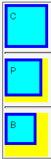

ボーダー領域やパディング領域の幅が0より大きいボックスのbox-sizingプロパティ（現在は独自拡張扱いのため-moz-box-sizingプロパティ）の値をpadding-boxやborder-boxに設定した場合、bottomプロパティやrightプロパティの振る舞いが正しくない。ボックスの下辺や右辺の位置が、本来あるべき位置よりも内側に置かれてしまう。
<style type="text/css">
.pr {
position: relative;
width: 75px;
height: 75px;
background: yellow;
}
.ch {
position: absolute;
left: 0; right: 0;
top: 0; bottom: 0;
margin: 0;
padding: 5px;
border: 5px solid blue;
background: aqua;
}
</style>
<div class="pr">
<div class="ch" style="-moz-box-sizing:content-box;">C</div>
</div>
<hr>
<div class="pr">
<div class="ch" style="-moz-box-sizing:padding-box;">P</div>
</div>
<hr>
<div class="pr">
<div class="ch" style="-moz-box-sizing:border-box;">B</div>
</div>
box-sizingプロパティ（初期値はcontent-box）にそれぞれの値を指定した場合の比較です。すべての場合で親要素の背景（黄色の領域）は見えないはずです。
Netscape7.1標準モード
Mozilla1.7alpha標準モード
mozilla.org bugzillaでは以下の項目が該当します。